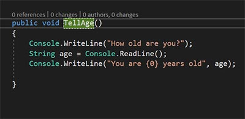

IO? Like the Moon?
Haha no no I/O not Io. I/O is short for input/output. It is one of the most critical function that computers perform. Without it they are effectively useless. It how information is passed and the "information" part of information technology.
Cool let's do it!
Lucky for us we can easily read and write to a console with our
two primary commands:
Cosole.WriteLine() which is used for the program to the console.
Console.ReadLine() which will read what the user types into the
console.
If you look at the above example the program will write a request to the user to enter their age. Then the program will wait for the user to enter their age and assign it to a string. Finally it will write to the console the age the user input. It is important to note that the program shown above does not do any sort of verification to ensure that the users input is actually a number this is obviously a terrible practice because the user could have put "potato" and the program would have wrote "you are potato years old". That is less than ideal. Remember whenever you right code to validate all data so that these things don't happen.
Thats it?
For reading and writing to console it really is that easy! However These methods are far more robust than that. Console.Read() can actually take a file as a parameter and read the file which you can then manipulate however you want.